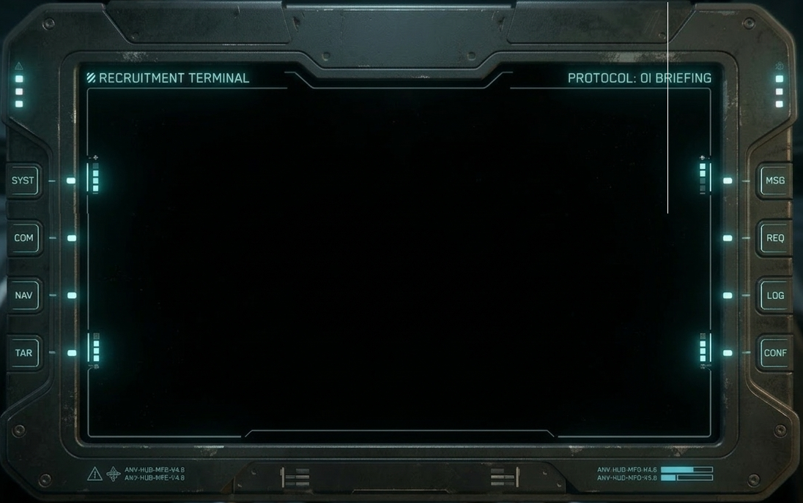

◈ STATION IDENT ◈
QNN
QUANTUM NEWS NETWORK
SIGNAL FROM EVERY SECTOR
SYS ONLINE
00:00:00
UPLINK
DOWNLINK
QUANTUM
CPU LOAD
72%
MEM ALLOC
58%
NET I/O
34%
ENC KEY
91%
◈ · · · ◈
QNN
QUANTUM NEWS NETWORK
SIGNAL FROM EVERY SECTOR
STAND BY FOR BROADCAST
JOIN
Odyssey Interstellar
Type !apply in chat
for briefing.
◈ QNN LIVE TRANSMISSION
00:00
◈ QNN
QNN · QUANTUM NEWS NETWORK · STANTON BUREAU
SEG 1 / 1
STANTON SYS
ENCRYPTED
CLEARANCE : BROADCAST-A
STATION :
QNN-STN-001
AUTH : BIOMETRIC
STATUS : ACTIVE SESSION
PROTOCOL : TLS-QE/256
